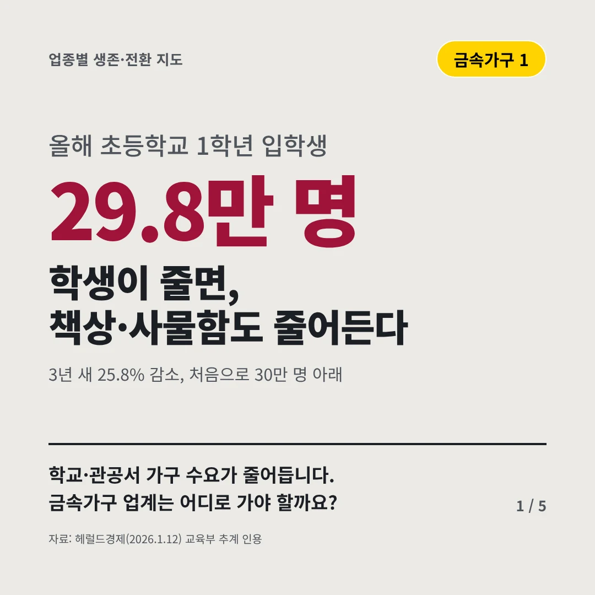
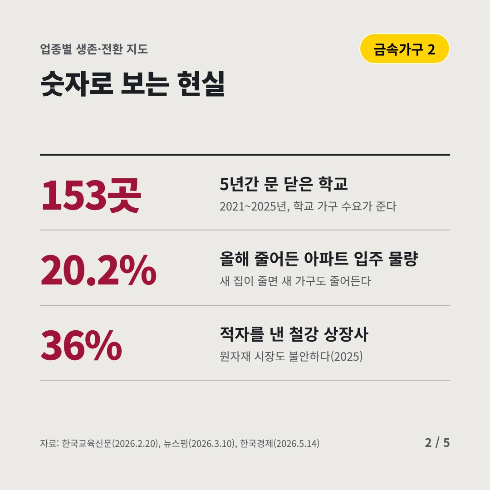
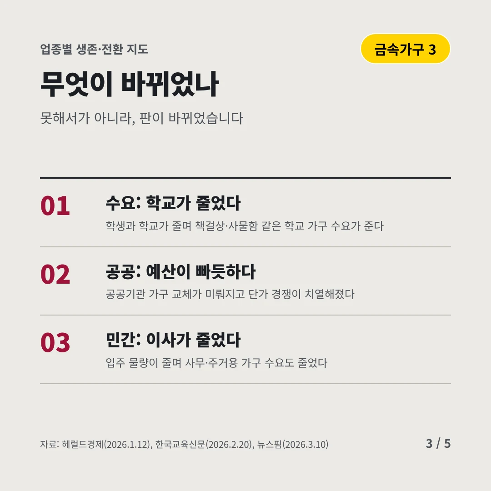
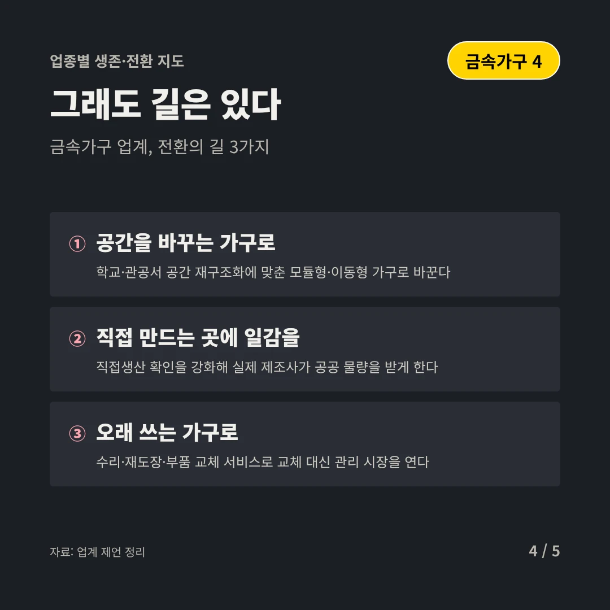
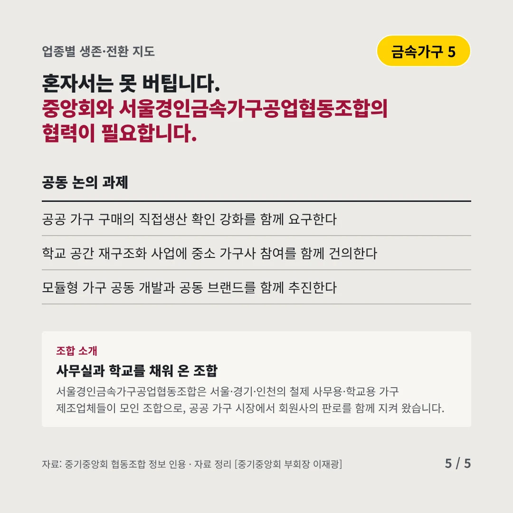
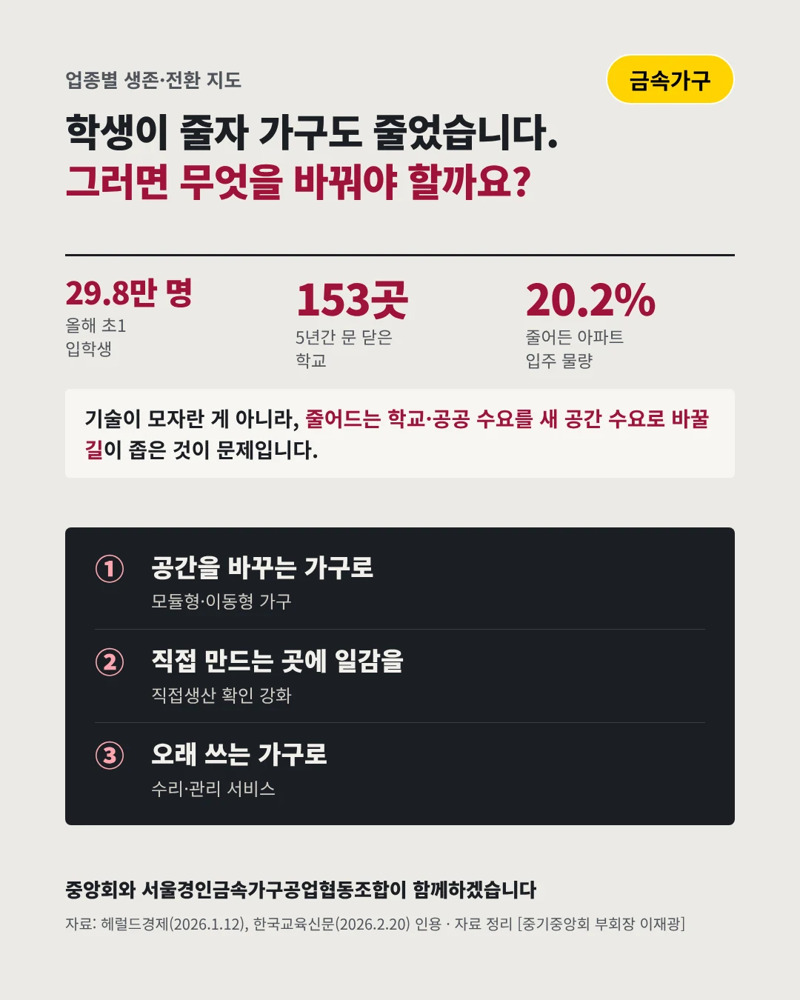

서울경인금속가구공업협동조합
학생이 줄면, 책상·사물함도 줄어든다
29.8만 명 올해 초등학교 1학년 입학생






학교·관공서 가구 수요가 줄어듭니다. 금속가구 업계는 어디로 가야 할까요?
숫자로 보는 현실
- 153곳5년간 문 닫은 학교2021~2025년, 학교 가구 수요가 준다
- 20.2%올해 줄어든 아파트 입주 물량새 집이 줄면 새 가구도 줄어든다
- 36%적자를 낸 철강 상장사원자재 시장도 불안하다(2025)
무엇이 바뀌었나
- 수요: 학교가 줄었다학생과 학교가 줄며 책걸상·사물함 같은 학교 가구 수요가 준다
- 공공: 예산이 빠듯하다공공기관 가구 교체가 미뤄지고 단가 경쟁이 치열해졌다
- 민간: 이사가 줄었다입주 물량이 줄며 사무·주거용 가구 수요도 줄었다
그래도 길은 있다
- 공간을 바꾸는 가구로학교·관공서 공간 재구조화에 맞춘 모듈형·이동형 가구로 바꾼다
- 직접 만드는 곳에 일감을직접생산 확인을 강화해 실제 제조사가 공공 물량을 받게 한다
- 오래 쓰는 가구로수리·재도장·부품 교체 서비스로 교체 대신 관리 시장을 연다
한 장 요약

조합 소개
서울경인금속가구공업협동조합은 서울·경기·인천의 철제 사무용·학교용 가구 제조업체들이 모인 조합으로, 공공 가구 시장에서 회원사의 판로를 함께 지켜 왔습니다.
자료: 헤럴드경제(2026.1.12), 한국교육신문(2026.2.20), 뉴스핌(2026.3.10), 한국경제(2026.5.14)